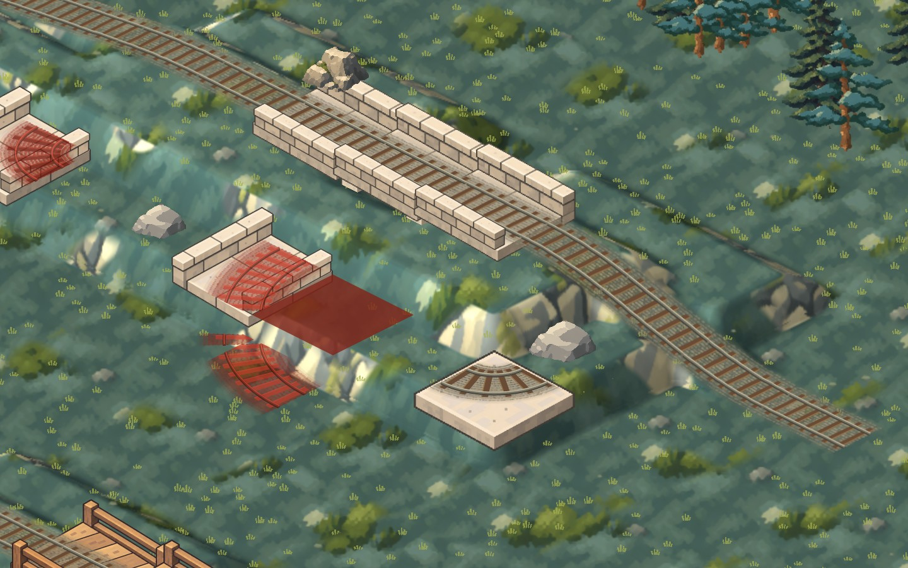
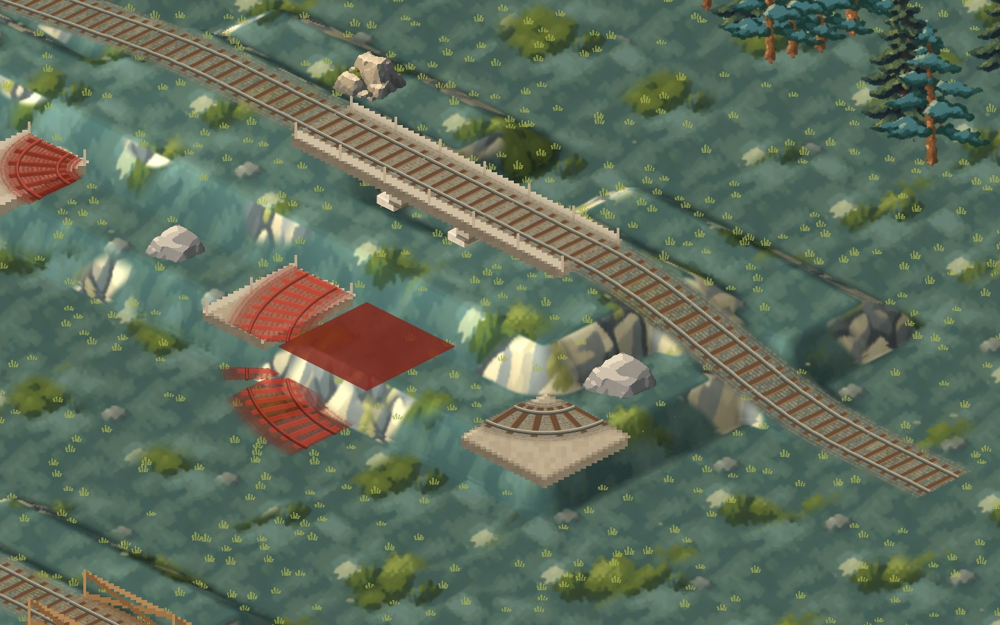
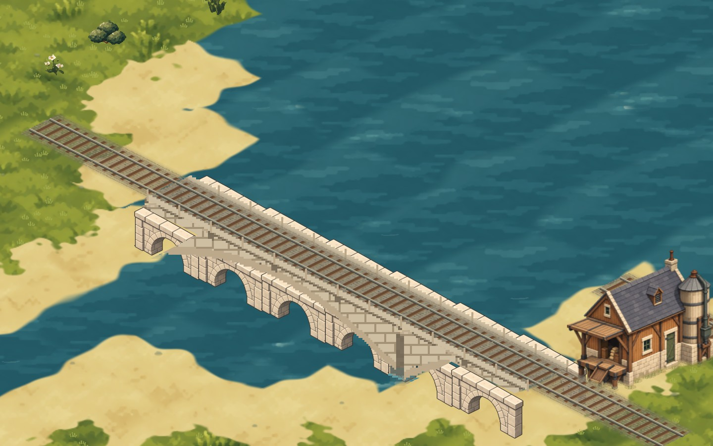
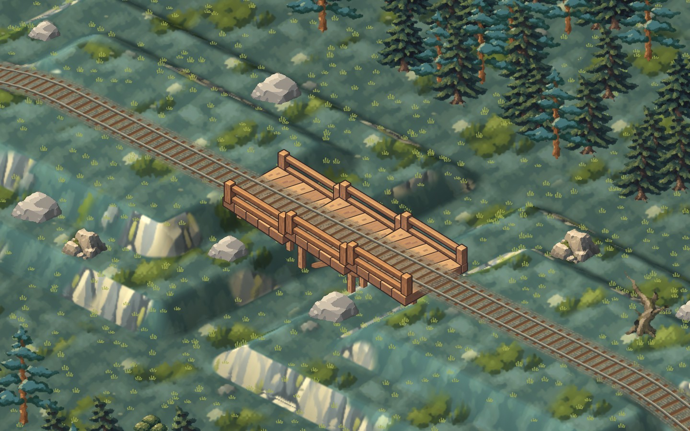
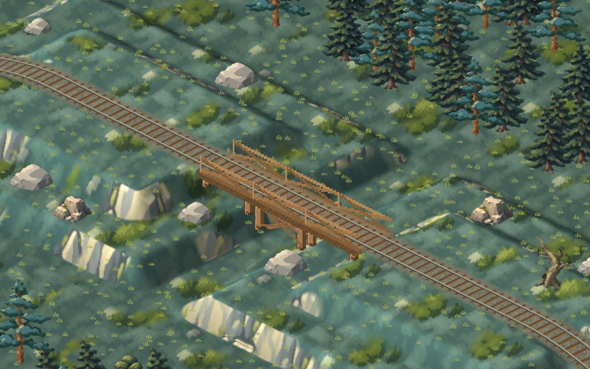
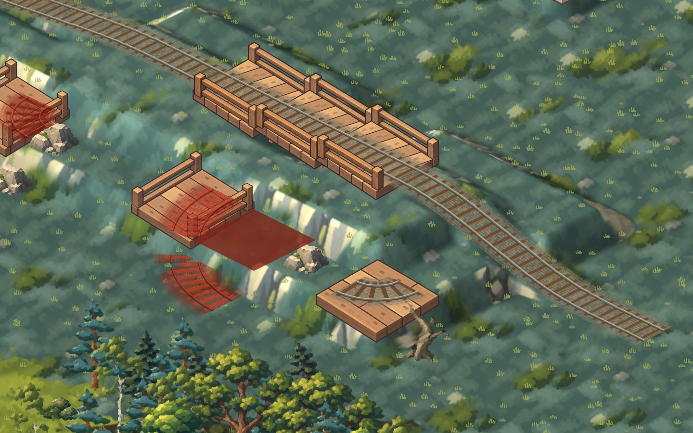
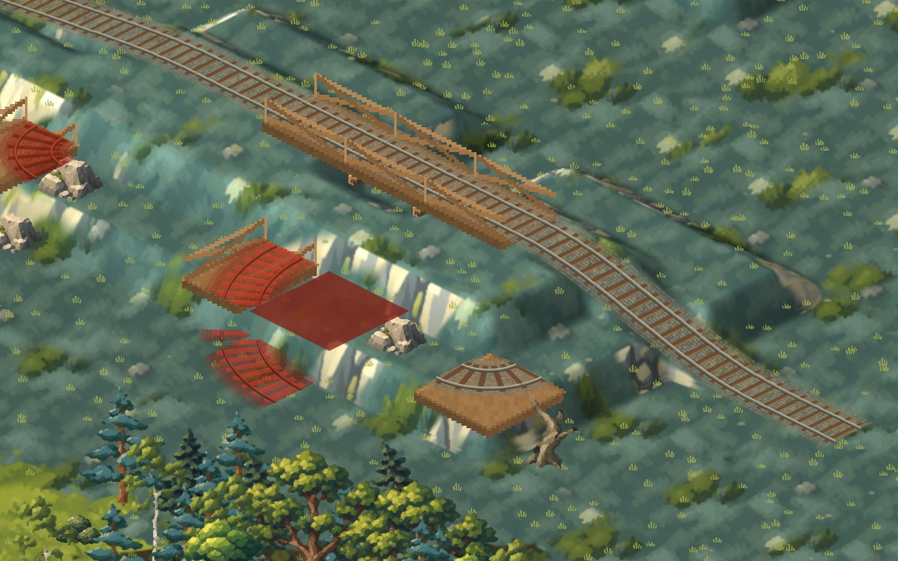
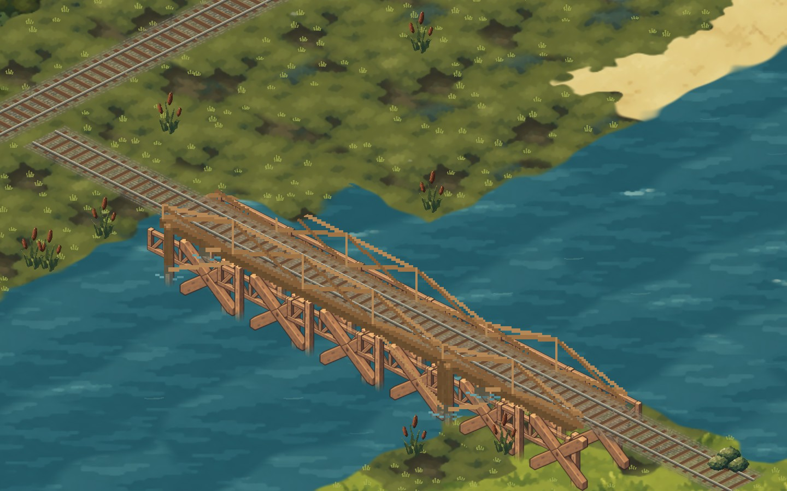

<title>Terepasztal Hill Climb</title>
<link rel="stylesheet" href="https://fonts.googleapis.com/css2?family=Archivo:wght@500;700&family=Atkinson+Hyperlegible:wght@400;700&family=IBM+Plex+Mono:wght@400;500&display=swap">
<style>
:root{--ground:#edf0ea;--panel:#f8faf6;--ink:#1c231f;--muted:#58645c;--line:#cdd5cc;--rail:#9a4f2c;--ok:#3f7a3a;
  font-family:"Atkinson Hyperlegible",system-ui,sans-serif;}
@media (prefers-color-scheme:dark){:root:not([data-theme="light"]){--ground:#141a16;--panel:#1b221d;--ink:#e3e9e2;--muted:#9aa79e;--line:#2e3831;--rail:#d98a5f;--ok:#7fbf73;color-scheme:dark}}
:root[data-theme="dark"]{--ground:#141a16;--panel:#1b221d;--ink:#e3e9e2;--muted:#9aa79e;--line:#2e3831;--rail:#d98a5f;--ok:#7fbf73;color-scheme:dark}
body{background:var(--ground);color:var(--ink);font-size:15px;line-height:1.55;padding-inline:clamp(16px,3vw,40px);padding-block:32px 64px}
main{max-width:1500px;margin:0 auto;display:grid;gap:48px}
h1,h2{font-family:Archivo,system-ui,sans-serif;text-wrap:balance;margin:0}
h1{font-size:30px;font-weight:700}
h2{font-size:21px;font-weight:700}
header,section{display:grid;gap:14px}
p{margin:0;max-width:72ch}
.muted{color:var(--muted)}
.mono{font-family:"IBM Plex Mono",ui-monospace,monospace;font-size:13px;font-variant-numeric:tabular-nums}
.grid{display:grid;gap:14px;grid-template-columns:repeat(auto-fit,minmax(min(100%,440px),1fr))}
.grid.three{grid-template-columns:repeat(auto-fit,minmax(min(100%,380px),1fr))}
figure{margin:0;display:grid;gap:6px;align-content:start}
figure img{width:100%;height:auto;display:block;border:1px solid var(--line);border-radius:3px;cursor:zoom-in}
figcaption{font-size:13.5px;color:var(--muted)}
figcaption b{color:var(--ink);font-weight:700}
.tag{font-family:"IBM Plex Mono",monospace;font-size:11.5px;letter-spacing:.06em;text-transform:uppercase;color:var(--rail)}
.status{display:grid;gap:6px;padding:14px 16px;background:var(--panel);border:1px solid var(--line);border-radius:4px}
.status li{margin:0}
.status ul{margin:0;padding-left:18px;display:grid;gap:4px}
.profile{display:flex;gap:3px;flex-wrap:wrap;align-items:flex-end}
.profile span{width:22px;background:var(--rail);opacity:.8;border-radius:2px 2px 0 0;display:flex;justify-content:center;align-items:flex-start;color:var(--panel);font-size:10px}
dialog{padding:0;border:0;background:transparent;max-width:98vw;max-height:98vh}
dialog img{max-width:98vw;max-height:96vh;display:block}
dialog::backdrop{background:rgba(0,0,0,.8)}
a{color:var(--rail)}
:focus-visible{outline:2px solid var(--rail);outline-offset:2px}
</style>
<main>
<header>
  <span class="tag">PR #20 · round 5</span>
  <h1>Hills, rails and climbing trains</h1>
  <p class="muted">Every image is the game's own renderer. Click an image for full size. Left: your bridge kit, now in the game. Right: the procedural bridges it replaces.</p>
  <div class="status">
    <ul>
      <li><b>Shipped:</b> summit sprites fully matched to the terrain rock and snow.</li>
      <li><b>Shipped:</b> your 18-piece bridge kit is packed into its own atlas and drawn in the game. Decks, pads and near railings come from the kit. Piers and posts are cut to the ground under each one, with a V-shaped foot. Over water, stone spans hang arches and timber spans hang trusses, and posts fade into the water.</li>
    </ul>
  </div>
</header>

<section>
  <span class="tag">Stone</span>
  <h2>Stone bridges</h2>
  <p class="muted">A two-level valley bridged at level 2, supported curves on a slope, and a river crossing. All at zoom 4.</p>
  <div class="grid">
    <figure><figcaption><b>Kit</b> · valley</figcaption></figure>
    <figure><figcaption><b>Procedural</b> · valley</figcaption></figure>
    <figure><figcaption><b>Kit</b> · supported curve, bare platforms, refusals</figcaption></figure>
    <figure><figcaption><b>Procedural</b> · same scene</figcaption></figure>
    <figure><figcaption><b>Kit</b> · river</figcaption></figure>
    <figure><figcaption><b>Procedural</b> · river</figcaption></figure>
  </div>
</section>

<section>
  <span class="tag">Wood</span>
  <h2>Wood bridges</h2>
  <p class="muted">A two-level valley bridged at level 2, supported curves on a slope, and a river crossing. All at zoom 4.</p>
  <div class="grid">
    <figure><figcaption><b>Kit</b> · valley</figcaption></figure>
    <figure><figcaption><b>Procedural</b> · valley</figcaption></figure>
    <figure><figcaption><b>Kit</b> · supported curve, bare platforms, refusals</figcaption></figure>
    <figure><figcaption><b>Procedural</b> · same scene</figcaption></figure>
    <figure><figcaption><b>Kit</b> · river</figcaption></figure>
    <figure><figcaption><b>Procedural</b> · river</figcaption></figure>
  </div>
</section>

</main>
<dialog id="zoom"></dialog>
<script>
const d=document.getElementById('zoom'),im=d.querySelector('img');
document.querySelectorAll('figure img').forEach(i=>i.addEventListener('click',()=>{im.src=i.src;im.alt=i.alt;d.showModal();}));
d.addEventListener('click',()=>d.close());
</script>
